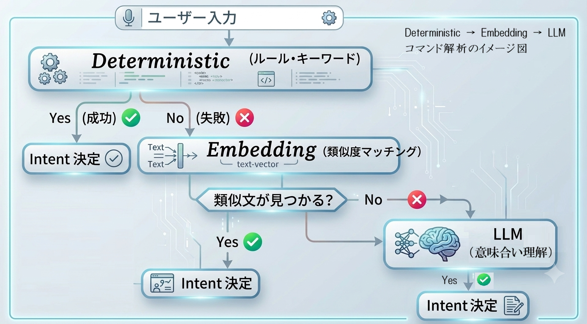

先週は実機と Isaac Sim の双方で Nav2（Navigation 2） + FAST-LIO2 + GICP（Generalized Iterative Closest Point）による自律ナビゲーションが完成しました。 今週はその上に「ロボットを自然言語で指示できる Agent 層」を構築することがテーマです。
今週扱ったテーマ：
- 各階層の役割・定義の境界・必要性
- トレンド調査・他エンジニアの設計経験
- できること・価値・技術進展・価値＆難しさ
- ハードウェア構成との接続方法の評価
自然言語コマンドから実機制御まで、責務を明確に分けた三層構成を採用しています。
L3 Agent → Skill Plan
Mission Agent → ROS2 Skill 実行
L2 Skill Layer → Dashboard 可視化
例：「06棚に赤い箱がありますか」→ resolve target → await AUTO → goto pose → scan 9方向 → detect object → 結果報告
| レイヤー | 問いかけ | 例 |
|---|---|---|
| Skill（L2） | How — どう実行するか | goto_pose：Nav2 で指定 pose へ移動し、成功/失敗を返す |
| Agent（L3） | What / Why / When / What next | 「近場」の意味は何か・失敗時に別 approach pose を試すか・Human に聞くか |
ユーザーコマンドを解析し、複数の Skill を組み合わせた実行計画を作り、健康状態や結果に応じて回復・継続・人間確認を判断する層。real lab でのテストを重ね、Recovery や Dashboard の監視項目を拡充しました。
HybridParser
MissionAgent
NavigationAgent
PerceptionAgent
Localization・Safety
DashboardNode
Agent が安全に呼び出せる typed robot API。ROS2 action / topic / service / Nav2 / semantic map への実際のアクセスはここに閉じ込め、結果は構造化された SkillResult で返す。
移動
意味解決
物体検出
自己位置
リフト
中断
get_robot_status 等
ロボット制御での LLM 単独使用は遅延・コスト・安全性の問題がある。そのため多段階ルーティングを採用：
<1 ms · ルール/正規表現 → Embedding
5〜20 ms · 意味検索 → LLM Fallback
300 ms+ · 複雑コマンド

| 層 | 処理時間 | 得意分野 | コマンド例 |
|---|---|---|---|
| Deterministic if-else / キーワード | <1 ms | 緊急停止・安全コマンド（これだけは LLM に任せない） | 止まれ、停止 |
| Embedding multilingual-e5-small | 5〜20 ms | 同義語・自然言語バリエーションのコマンド | 少し待ってください、止まって、待って |
| LLM Fallback qwen2.5-3b · ローカル | 300 ms+ | 複雑・多段階・曖昧な指示 | 今日はここまでにして、残りは午後に続けよう。 |
LLM は毎回呼ばれず、あくまで MissionIntent JSON への変換のみを担当します。
- ROS topic 名や座標を LLM に生成させない
- motion / safety / contact を直接 LLM に許可しない
- 安全系コマンドは必ず Deterministic で処理する
ROS2 / Isaac Sim を起動せずに、Parser と Skill Plan の妥当性だけを検証する dry-run test を継続的に運用中。現時点のテストケースと結果は以下から確認できます（今後随時更新予定）。
自然言語コマンドを受け取ってからナビゲーション・観察・各種タスク実行までの一連の動作を、複数のシナリオで確認しました。
従来の Waypoint 方式（座標列を直接渡す）に対し、Agent & Skill パターンは以下の価値を持ちます：
- LLM との親和性：大規模言語モデルが解析・指示しやすい抽象化レベル
- 人間が監視・理解しやすい：Dashboard でロボットの思考過程・行動履歴を可視化
- ネットワーク構造：一長串のコードを「任意に組み合わせ可能なネット状構造」に解剖。各分岐が独立して拡張できる
- 上層 Agent 構築への基礎：将来の上位 Agent システムから機械的に監視・呼び出すことも可能な設計
採用しなかった方針：
- Robot Skill 洗い出し： 底層の Robot Skill を検討・整理・拡張し、ロボットの能力範囲内のすべての作業を可能な限りカバーする。低階層のロバスト性テスト＆改善も並行して実施。
- Dashboard 設計： 人間が監視・インタラクションしやすい UI を設計。ロボットの行動履歴が人間にも理解しやすい形で表示される。将来的には上層 Agent が監視する基盤としても使えるよう設計する。
- L402 部屋 USD モデル作成： 調査フェーズで固まった方針をもとに、Isaac Sim 用の部屋モデルを実際に構築する。